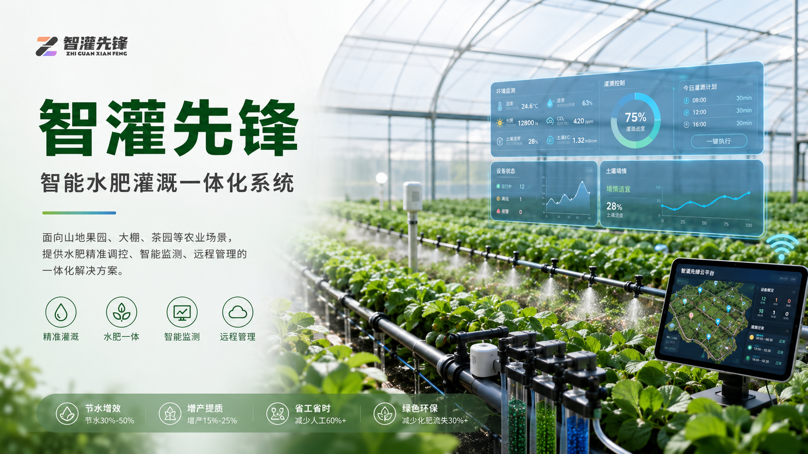

果园、大棚、茶园等典型农业应用场景
灌溉总览
设备在线率
98.6%
远程控制
24h
- A区土壤湿度 23.5%
- B区灌溉完成率 75%
- C区水肥配比 1.2EC
About Us
关于我们
聚焦智慧农业、水肥一体化与农业数字化管理，提供从设备建设到平台运营的完整交付能力。
企业简介
加载中...

设施农业智慧控制
围绕温室种植环境，实现灌溉、施肥、监测与远程控制协同联动
覆盖现场终端、控制系统与云端平台联动
远程巡检、告警响应与系统优化持续在线
从需求调研、方案设计到实施交付和运维服务
需求调研
结合地块、作物和管理目标，梳理灌溉与数字化建设需求。
方案设计
完成设备选型、管网规划、控制逻辑和平台配置设计。
实施交付
推进现场安装、系统联调和项目验收，确保稳定上线运行。
持续运维
提供远程巡检、数据分析、告警响应和优化升级服务。
Solutions
产品中心
以节水、高效、智能为核心，构建覆盖灌溉控制、水肥管理和农业感知的产品体系。
Projects
工程案例
结合真实项目交付经验，沉淀适配不同作物、地形与管理模式的落地能力。
News
新闻中心
持续关注公司动态、项目进展与智慧农业技术应用成果。
Contact
联系我们
欢迎沟通智慧农业项目建设、节水灌溉升级、水肥一体化改造及农业数字化平台合作。